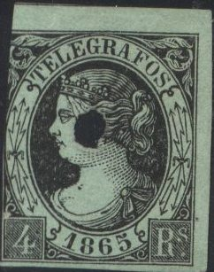

{kind=link}


The hole in the first stamp is a typical Spanish way of cancelling telegraph stamps.
Note: on my website many of the
pictures can not be seen! They are of course present in the
catalogue;
contact me if you want to purchase it.
1 r brown 4 r red 16 r green 20 r black

The hole in the first stamp is a typical Spanish way of
cancelling telegraph stamps.
With date '1865' 1 r bleu on lilac 1 r brown 4 r black on green 4 r blue 16 r red on yellow 16 r green 20 r red on red 20 r red With date '1866' 10 c brown 40 c blue 1 E 60 c green 2 E red With date '1867' 10 c violet 40 c blue 1 E 60 c green 2 E red With date '1868' 100 m violet 400 m blue 800 m brown 1 E 600 m green 2 E red With date '1869' 100 m blue 800 m red 1 E 600 m brown 2 E green
400 m violet

5 c black 5 c violet (1921) 10 c blue 10 c black (1921) 15 c brown 15 c blue (1921) 30 c violet 30 c orange (1921) 50 c red 50 c lilac (1921) 1 P blue 1 P green (1921) 4 P red 4 P blue (1921) 10 P green 10 P brown (1921)

5 c brown 10 c blue 15 c lilac 30 c violet 50 c red 1 P yellow 4 P red 10 P blue
I've been told that this is a forgery of the 10 P value, I have
no further information. I know a postal forgery of this stamp
exists. I presume this is this postal forgery.
5 c green 10 c blue 15 c violet 30 c violet 50 c red 1 P green 4 P blue 10 P red
Stamps with the arms of Spain and with inscription 'TELEGRAFOS' in the following design were issued for the Philippines:

Stamps - Briefmarken - Timbres-Poste - Postzegels - Francobolli - Estampillas